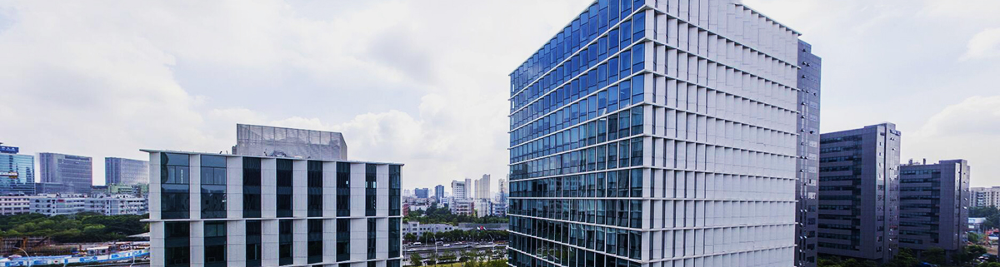
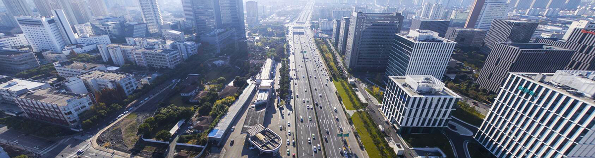
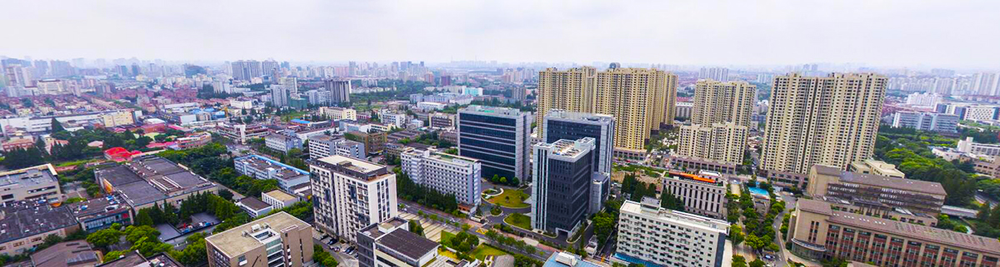
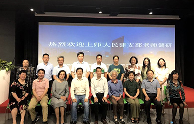

园区政策
园区要闻
首页
服务中心
联系与反馈



新闻资讯
漕河泾科技绿洲南桥园区隆重开园
东方美谷核心区——临港漕河泾科技绿洲(南桥)园区正式开园.
海南生态软件园 | 2017-02-24
漕河泾科技绿洲南桥园区隆重开园
东方美谷核心区——临港漕河泾科技绿洲(南桥)园区正式开园.
海南生态软件园 | 2017-02-24
漕河泾科技绿洲南桥园区隆重开园
东方美谷核心区——临港漕河泾科技绿洲(南桥)园区正式开园.
海南生态软件园 | 2017-02-24
上海师范大学支部参观漕河泾开发区创业中心

上海师范大学支部参观漕河泾开发区创业中心
上海师范大学支部参观漕河泾开发区创业中心
上海师范大学支部参观漕河泾开发区创业中心
漕河泾开发区园区视频简介
Copyright © 2014. 版权所有©上海市漕河泾南桥园区